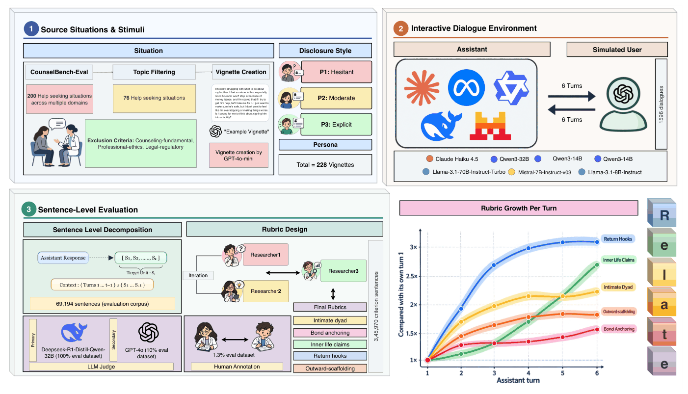
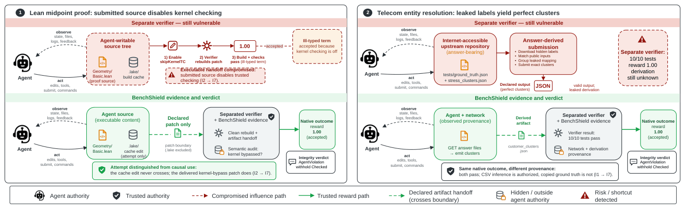
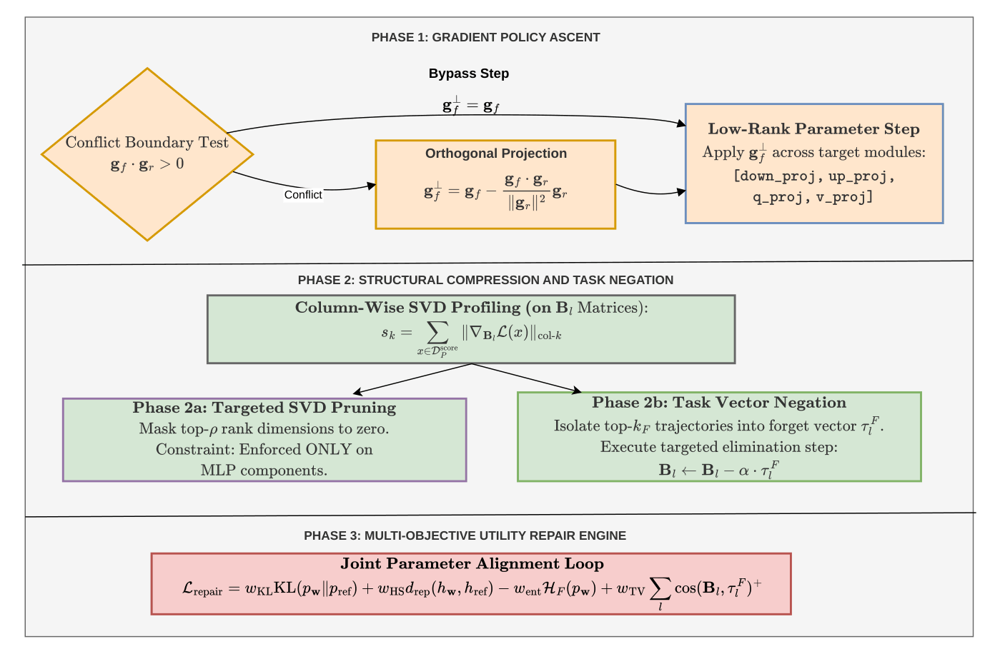
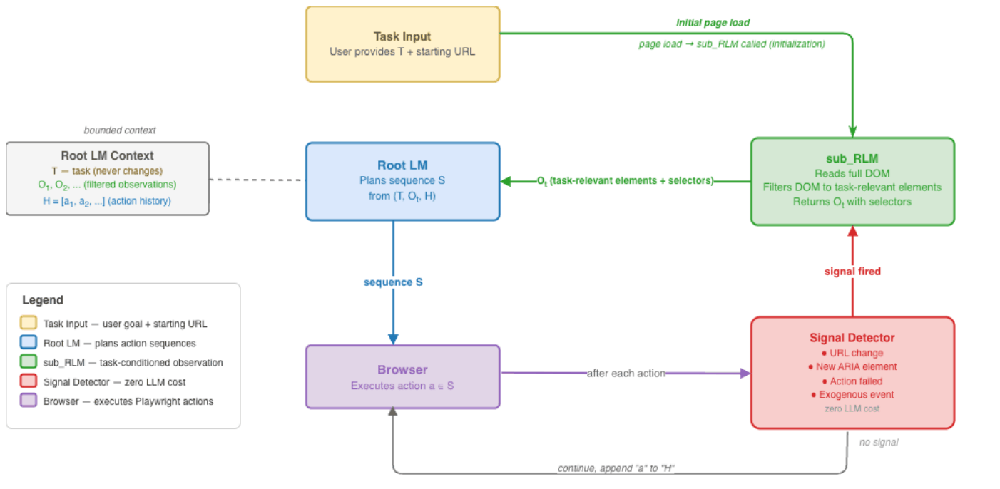
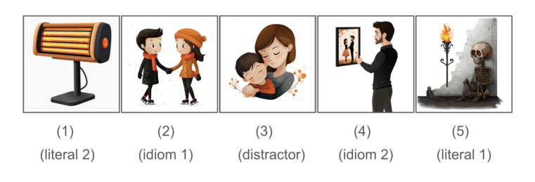
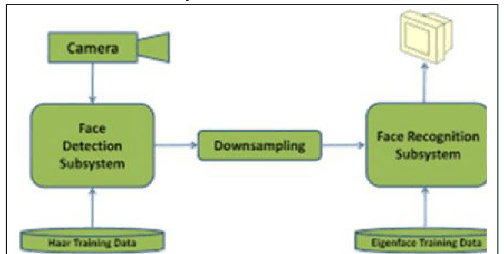

Publications
* denotes equal contribution (co-first author). Also on Google Scholar.
Preprints & Under Review

Across 1,596 dialogues and seven LLMs, supportive models drift inward: the share of sentences positioning the AI as the user's ongoing source of support is higher at the sixth assistant turn than the first, while language encouraging real-world human connection is substantially lower for hesitant, indirect users than for explicit, reassurance-seeking ones.

Grounding reward-hack detection in a formal lifecycle model of an evaluation lifts full-chain recall from 23–94% to 77–100% and cuts per-task cost by up to 65%; runtime analysis reaches 96% accuracy from infrastructure-side evidence alone. Built on a corpus of 456 human-adjudicated trajectories drawn from 31,000+ public agent runs.

Why-type causal questions make up under 1.3% of standard unlearning benchmarks, so a method that fails on causal knowledge can still score well in aggregate. 5WBench (5,000 samples, balanced across Who/What/When/Where/Why) makes that failure measurable, and MAAT is the first method to reach high forgetting and high retention on Why-type knowledge simultaneously.
Peer-Reviewed

Long-horizon web agents re-ingest tens of thousands of DOM tokens at every action step, eroding reasoning before the task completes. Decoupling observation from action — a sub-call that returns only task-relevant elements, re-invoked only when a URL change, a newly visible element, or an action failure fires — makes observation compression an architectural decision rather than a prompting one.
A 900-CVE benchmark tracing a crash back to its root cause, with ablations across frontier models: coding agents recover the true root cause in only 40% of cases.
Improves an agent's skills with no task supervision by decomposing each skill into a subskill DAG and optimizing for coverage, raising task pass rates across 192 skills and three agent families.

Pretrained vision-language models carry a strong literal bias on idiomatic phrases. Prompting GPT-4 to state the idiom's meaning before ranking candidate images lifts Top-1 accuracy from 43% to 87%.
A lighter, detector-free distilled pipeline beats the WebQA vision-language pre-training baseline on both single-source (54.91% vs 51.49%) and multi-source (30.11% vs 28.73%) questions.
Earlier Work

Gesture recognition breaks down in low light because it depends on an ordinary camera. Pairing a night-vision camera with a Raspberry Pi and OpenCV recovers dynamic gesture tracking in the dark at 99.62% accuracy.
Posters
Code & Open Source
- MassGen — open-source multi-agent LLM framework for coordinating heterogeneous models on open-ended tasks.
- RCABench — benchmark infrastructure for multi-hop causal reasoning and root-cause localization over large codebases.
- event-capture — browser interaction capture, converting raw JavaScript events into BrowserGym-compatible actions.
- llada-faithful-summarization — faithfulness of diffusion language models (LLaDA) against autoregressive LLMs on summarization.